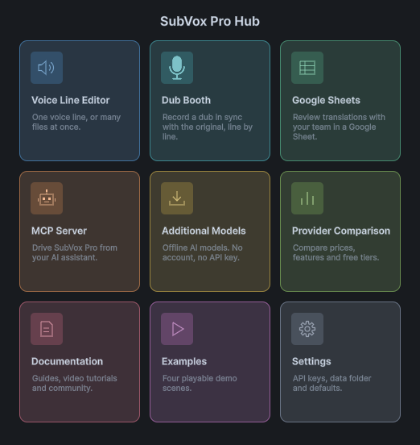
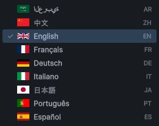
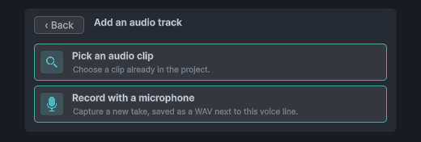
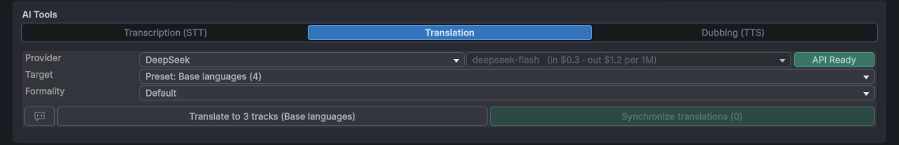
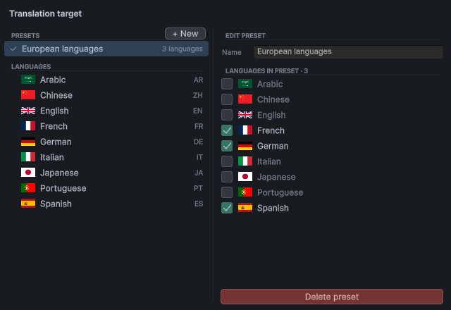
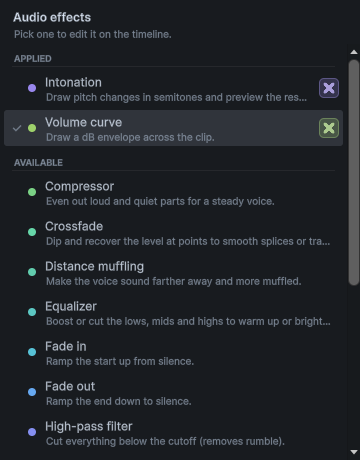
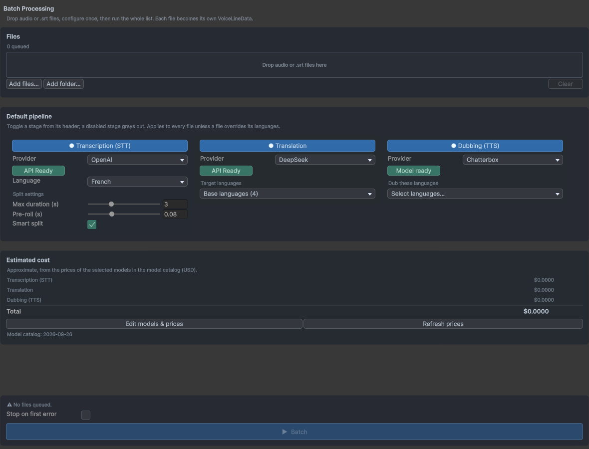
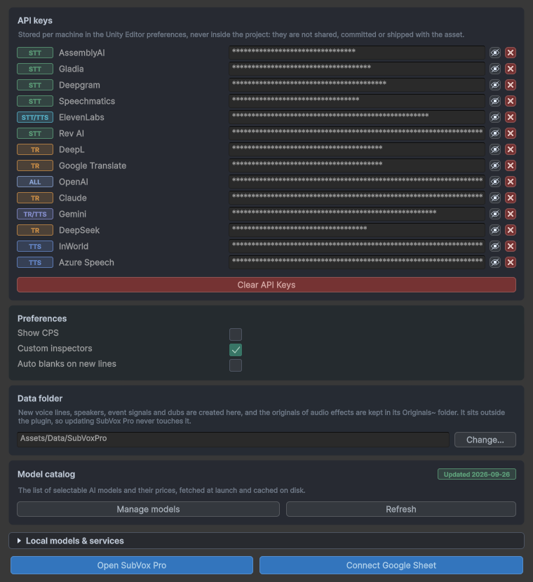

SubVox Pro
SubVox Pro transforme vos répliques en sous-titres synchronisés et en doublages, directement dans Unity :
- Transcrivez un clip audio en sous-titres horodatés, avec un service en ligne ou entièrement hors connexion.
- Ajustez le timing sur une forme d’onde, stylisez les mots et vérifiez la vitesse de lecture.
- Traduisez dans 48 langues et doublez par synthèse vocale, si besoin avec la voix de chaque personnage.
- Jouez le résultat en jeu avec quelques composants, déclenchez des événements de gameplay depuis une réplique et placez vos répliques sur la Timeline Unity.
clip, enregistrement, .srt, .txt
sous-titres horodatés
marqueurs, mots, styles
48 langues
synthèse vocale, voix clonées
composants, événements, Timeline
Partez de l’audio ou du texte, et n’utilisez que les étapes dont vous avez besoin.
Les boutons et les champs sont cités en anglais, tels qu’ils apparaissent dans Unity. Le guide et la référence d’API existent en français sur ce site ; le PDF livré avec le plugin est en anglais.
Sommaire
- Avant de commencer
- Démarrage rapide
- La fenêtre SubVox Pro
- Transcrire
- Traduire
- Doubler par synthèse vocale
- Speakers et personnalités vocales
- Modifier l’audio
- Jouer des voicelines dans votre jeu
- Déclencher du gameplay depuis une voiceline
- Timeline Unity
- Traiter plusieurs fichiers à la fois
- Travailler avec votre assistant IA
- Moteurs locaux, sans compte ni clé API
- Traduction humaine avec Google Sheets
- Réglages
- Clavier et souris
- Langues prises en charge
- Vos données et les services en ligne
- Voix générées par IA dans votre jeu
- Emplacement de vos fichiers
- Mettre à jour et désinstaller
- Dépannage
- Support
La création des comptes et des clés API est expliquée étape par étape dans le guide des fournisseurs.
Avant de commencer
- Unity 2022.3 LTS ou plus récent, y compris Unity 6, avec n’importe quel pipeline de rendu : Built-in, URP ou HDRP.
- TextMesh Pro : importez TMP Essentials une fois si ce n’est pas déjà fait. Avec Unity 2022.3, installez d’abord le package TextMeshPro depuis le Package Manager. Unity 6 l’inclut déjà.
- Unity Timeline est facultatif : les fonctions Timeline apparaissent dès que son package est installé.
- En jeu, SubVox Pro fonctionne sur toutes les plateformes prises en charge par Unity.
- Dans l’éditeur, SubVox Pro est testé sous Windows. Les services en ligne, avec vos propres clés API, devraient aussi fonctionner sous macOS et Linux, mais n’y ont pas encore été testés. Les moteurs locaux (transcription, traduction et doublage sans compte) demandent l’éditeur Windows.
Démarrage rapide
D’un clip audio à des sous-titres synchronisés à l’écran, en quelques minutes.
Le Hub
Tout SubVox Pro est à un clic dans Tools ▸ SubVox Pro ▸ Hub. Ses dix tuiles ouvrent l’éditeur de voicelines, le Dub Booth, le traitement par lot, Google Sheets, la comparaison des fournisseurs, les modèles locaux supplémentaires, le serveur MCP pour les assistants IA, les scènes d’exemple, la documentation et les réglages.

Documentation ouvre un second écran (Back revient aux tuiles) :
| Bouton | Ouvre |
|---|---|
| Online | Ce site : guide, fournisseurs et référence d’API, en anglais, français, allemand, japonais ou chinois simplifié |
| Local | Le PDF anglais, lisible hors connexion |
| Provider Setup | Le même PDF, ouvert directement à sa partie consacrée aux fournisseurs |

Cinq étapes
1. Choisissez comment transcrire. Collez la clé API d’un service de transcription dans Tools ▸ SubVox Pro ▸ Settings (obtenir une clé), ou utilisez sous Windows Whisper ou Parakeet, gratuits et hors connexion (ils proposent de télécharger leur modèle à la première utilisation).
2. Créez une voiceline. Assets ▸ Create ▸ SubVox Pro ▸ Voice Line, sélectionnez-la et cliquez sur Edit Voice Line dans l’Inspector. La fenêtre SubVox Pro s’ouvre sur une nouvelle voiceline : vérifiez Language (anglais la première fois, puis la dernière langue choisie), choisissez Add an audio track et prenez votre clip, ou enregistrez-en un.
Vous pouvez aussi faire un clic droit sur un fichier audio dans la fenêtre Project et choisir SubVox Pro ▸ Create Voice Line. Choisissez où enregistrer la nouvelle voiceline : l’éditeur s’ouvre avec ce clip déjà renseigné.

3. Transcrivez. Dans AI Tools ▸ Transcription, choisissez le fournisseur et la langue parlée, puis cliquez sur Transcribe. Les sous-titres apparaissent sur la forme d’onde.
4. Ajustez. Déplacez les marqueurs sur la forme d’onde, corrigez le texte dans la liste et appuyez sur Space pour écouter.
5. Affichez le résultat en jeu. Placez les prefabs [SubVox Pro] et Subtitle Displayer
(SubVoxPro/Prefabs) dans votre scène, puis jouez la réplique :
using SubVoxPro;
SubVox.Play(myVoiceLine);
Envie de voir le résultat d’abord ? Ouvrez Examples dans le Hub (ou Tools ▸ SubVox Pro ▸ Example Scenes) et appuyez sur Play. Quatre scènes prêtes à l’emploi, avec des voicelines en quatre langues, des bulles, des séquences de dialogue, des events de voix et les options de sous-titres :
- un temple en 3D ;
- une station néon en 2D ;
- un visual novel noir ;
- un bac à sable en vue subjective, avec un stand par fonctionnalité.
La fenêtre SubVox Pro

Ouvrez-la avec Tools ▸ SubVox Pro ▸ Voice Line Editor ou Edit Voice Line dans l’Inspector d’une voiceline. De haut en bas :
- Voice Line Data : la voiceline en cours, avec les boutons pour en créer une, parcourir les autres, la découper ou la supprimer. Le point coloré est un tag, affiché sur l’icône de l’asset dans la fenêtre Project pour trier vos répliques. Les voicelines des scènes d’exemple sont rangées à part, dans un dossier Examples replié en bas de la liste.
- Source : les sélecteurs AUDIO et SUBTITLES. Chaque voiceline a une langue source (le drapeau ; cliquez dessus pour la changer) et une piste par langue traduite ou doublée. Les deux sélecteurs sont indépendants : vous pouvez par exemple lire les sous-titres français en écoutant l’audio anglais.
- AI Tools : transcription, traduction et doublage (voir ci-dessous).
- Timeline : la forme d’onde et les marqueurs de sous-titres. Chaque marqueur indique le début d’un sous-titre ; un marqueur sans texte efface l’affichage (un blank). Les marqueurs appartiennent à l’audio : la source et chaque doublage ont leurs propres marqueurs, placés sur leur propre audio.
- Live preview : le sous-titre à la position de lecture, tel qu’il apparaîtra en jeu. Choisissez une couleur ou un style au-dessus, puis glissez sur les mots pour les appliquer (glisser avec le bouton droit les retire).
- Subtitles : une ligne par sous-titre, avec son nom, sa durée, son speaker, son texte et un bouton de lecture.
Tags et langues
Cliquez sur le tag à côté de Voice Line Data pour choisir sa couleur et sa forme. Clear tag le retire. La forme permet de distinguer les voicelines sans se fier uniquement à leur couleur. Cliquez sur A-Z ou 0-9 pour utiliser une lettre ou un chiffre comme forme.

Cliquez sur le drapeau source pour choisir la langue parlée.
- Les drapeaux représentent des langues, pas la nationalité des personnages : le sélecteur indique leur nom et leur code, inutile de reconnaître le drapeau.
- Les langues déjà utilisées par une traduction ou un doublage sont grisées.
- Pour effacer les sous-titres source, utilisez la croix sur la ligne source du sélecteur SUBTITLES.

Commencer sans audio

Une voiceline peut commencer par du texte plutôt que par de l’audio. Choisissez Add a subtitles track, puis :
| Choix | Donne |
|---|---|
| Importer un fichier .srt | Des sous-titres avec leurs timings |
| Importer un fichier .txt | Un sous-titre par ligne, avec des durées calculées pour laisser le temps de lire |
| Ajouter les lignes à la main | Les lignes que vous saisissez vous-même |
Réglez Length : c’est la durée de lecture de la voiceline en jeu tant que vous n’ajoutez pas d’audio ou ne générez pas de doublage depuis le texte.
Enregistrer de l’audio

Record with a microphone (dans Add an audio track ou dans le + à côté du sélecteur AUDIO) ouvre un petit enregistreur :
- Choisissez le microphone et surveillez le niveau. Pour le régler, cliquez sur Calibrate à côté de Gain et parlez normalement pendant 3 secondes.
- Enregistrez, puis réécoutez.
- Cliquez sur Use recording. La prise est enregistrée en WAV à côté de la voiceline.
Sur macOS, autorisez Unity à utiliser le microphone dans les Réglages Système.
Lire le texte pendant l’enregistrement

Quand la voiceline a déjà des sous-titres, l’enregistreur les affiche dans Read along : vous pouvez enregistrer un doublage en lisant le texte. Choisissez la langue à lire dans la liste (ou Off).
Pendant que vous parlez, les mots passent en vert quand ils sont entendus et en rouge quand ils ont été sautés. Le texte défile une ligne à la fois, en gardant la ligne précédente visible.
- Tout se passe sur votre ordinateur, gratuitement : il faut Parakeet ou un modèle Whisper local (Tools ▸ SubVox Pro ▸ Additional Models). Si plusieurs sont installés, choisissez celui à utiliser dans le menu à côté de la langue.
- Retake jette la prise et relance l’enregistrement aussitôt.
- Listen lit la prise à partir du marqueur de lecture. Cliquez ou glissez sur la forme d’onde pour le déplacer ; Stop le laisse là où la lecture s’est arrêtée. La touche Space lance et arrête aussi la lecture.
- Après Stop, toute la prise est vérifiée une dernière fois. Cliquez sur les mots rouges que vous avez bien dits pour les accepter.
- Use recording ajoute la prise comme d’habitude (remplacer une piste ou ajouter un doublage), chaque mot étant calé sur votre prise. Si le timing des mots Qwen3 est installé, il affine ces timings. Undo rétablit les timings précédents.
Doubler en synchro avec l’original (Dub Booth)

Le Dub Booth enregistre un doublage comme le font les comédiens : une ligne à la fois, par-dessus le jeu original, pour que votre prise tombe là où se trouve la ligne originale. Ouvrez-le depuis + Add audio ▸ Dub over the original, le Hub ou Tools ▸ SubVox Pro ▸ Dub Booth. Portez un casque, pour que l’original n’atteigne pas le micro.
Enregistrer une ligne
d’abord
décompte
au 4e temps
en fin de ligne
- Choisissez la voiceline et la langue à doubler. Original (ADR) réenregistre la langue d’origine.
- Appuyez sur Space. L’original joue quelques secondes avant la ligne, trois bips décomptent et l’enregistrement démarre sur le quatrième temps, muet. Le texte défile mot à mot sous la tête de lecture, entre les repères IN et OUT.
- La prise s’arrête d’elle-même à la fin de la ligne (ou appuyez sur Space).
- Des badges indiquent si vous êtes parti on cue (dans le temps) et de combien vous êtes plus long (longer) ou plus court (shorter) que l’original. Survolez-les pour voir les deux durées.
- Prise ratée en cours d’enregistrement ? Discard (ou Esc) la jette aussitôt, sans attendre la fin.
- Écoutez et comparez (voir le tableau ci-dessous), ou refaites la prise avec Redo.
- Validate & next (ou Enter) valide la prise et passe à la ligne suivante à enregistrer. Unvalidate retire la validation.
- Build dub place les prises gardées sur la timeline de l’original et les ajoute comme doublage de cette langue (ou, pour Original (ADR), Replace original). Les mots sont ensuite calés sur vos prises, ligne par ligne, sans modèle à installer. Installez le timing des mots Qwen3 (Additional Models) pour des timings encore plus précis.
Écouter et comparer les prises
| Commande | Rôle |
|---|---|
| Play | Joue votre prise en synchro avec l’original |
| Menu à côté de Play | This line, With previous line (pour vérifier qu’une correction s’enchaîne avec la ligne d’avant) ou All lines, chacune avec sa prise validée |
| Icônes de haut-parleur (ORIGINAL, YOUR TAKE) | Choisissent ce que vous entendez ; A passe de l’une à l’autre |
| Redo (ou R) | Enregistre une autre prise. Toutes les prises sont gardées |
| TAKE | Reprend une prise ; la prise validée est marquée ✓ |
| Corbeille à côté de TAKE | Supprime la prise sélectionnée (une nouvelle prise reprend le premier numéro libre) |
Ligne trop longue ou trop courte
- Shorten : une traduction est souvent 20 à 30 % plus longue que l’original. Quand une ligne sera difficile à dire dans le temps de l’original, un avertissement s’affiche sous son texte avant l’enregistrement. Shorten demande à votre traducteur (OpenAI, Claude, Gemini ou DeepSeek) une version plus courte, de même sens, qui tient dans ce temps ; Undo rétablit le texte précédent.
- Fit to original : à côté des badges, il étire ou compresse une prise de 10 % au plus, sans changer la hauteur de la voix, et la décale pour qu’elle commence avec l’original. Le résultat est une nouvelle prise, prête à valider. Plus de 10 % d’écart ? Refaites la prise : l’étirer davantage sonnerait faux.
Plusieurs lignes d’un coup
Le menu au-dessus de la liste des lignes règle ce que couvre un enregistrement :
| Choix | Enregistre |
|---|---|
| Record one line | La ligne sélectionnée |
| Record several lines | De la ligne cliquée jusqu’à celle choisie avec Maj-clic |
| Record all lines | De la ligne sélectionnée jusqu’à la fin |
Plusieurs lignes s’enregistrent d’un coup, à un rythme naturel, puis sont découpées en une prise par ligne.
Réglages et sauvegarde
- Booth settings règle le micro, le gain (Calibrate fonctionne comme dans l’enregistreur), la part d’original jouée avant la ligne, les bips, ce que vous entendez pendant la prise et la vitesse de défilement (un minimum : le texte accélère quand une ligne ne tiendrait pas).
- Les prises sont sauvegardées au fil de l’eau : fermez la fenêtre et revenez plus tard pour reprendre où vous en étiez.
Ajouter vos propres doublages
Vous avez déjà des doublages enregistrés ? Cliquez sur le + à côté du sélecteur AUDIO et choisissez ou enregistrez le clip. Une fenêtre demande alors sa langue :
- Replace a track : il remplace l’audio d’origine ou un doublage existant ;
- Add a new track : choisissez sa langue pour l’ajouter comme nouveau doublage.
Les lignes sont placées proportionnellement sur le nouvel audio (ou calées sur la prise si vous avez lu le texte) : déplacez les marqueurs pour les ajuster. Les lignes traduites dans cette langue s’affichent sur le doublage quand elles existent.
Importer des sous-titres dans une autre langue
Le + à côté du sélecteur SUBTITLES importe un fichier .srt ou .txt. Sur une voiceline qui a déjà du contenu, une fenêtre demande dans quelle langue est le fichier :
- Replace a track : remplace les sous-titres originaux (avec les timings du fichier) ou une traduction existante ;
- Add a new track : choisissez sa langue pour l’ajouter comme nouvelle traduction.
Une traduction garde le timing des lignes originales. Chaque ligne importée va sur la ligne originale de même
position ou, pour un .srt qui n’a pas le même nombre de lignes, sur la ligne originale jouée à ce moment-là.
Vérifier vos sous-titres
- Show CPS, dans les réglages, affiche la vitesse de lecture de chaque ligne et signale les lignes trop rapides.
- Check Subtitles, affiché avec Show CPS, parcourt les problèmes un à un (noms vides ou en double, lignes hors du clip, chevauchements, lignes trop rapides à lire) avec des corrections en un clic. Tout s’annule.
- Auto blanks masque le sous-titre quand personne ne parle, sans ajouter de marqueurs. Cliquez sur son bouton (après les onglets de recadrage, d’édition du temps et d’effets, à droite de la barre de la timeline), activez-le dans son popup et réglez la durée minimale d’un silence ; les parties masquées sont ombrées sur la forme d’onde.
- Export SRT enregistre les sous-titres dans un fichier
.srt.

| Réglage Auto blanks | Rôle |
|---|---|
| Silence | L’écart de volume nécessaire entre une pause et la voix |
| Min pause | Ignore les silences trop courts |
| Hold out | Garde brièvement le texte après l’arrêt de la voix |
| Lead in | Fait réapparaître le texte avant la reprise de la parole |
| Only between two lines | Évite qu’un sous-titre disparaisse puis réapparaisse au milieu de sa phrase |
Les badges SYNC
Chaque ligne de la liste Subtitles commence par un badge coloré, dans la colonne SYNC, qui indique l’état de la ligne. Survolez un badge pour voir le détail ; quand un badge est cliquable, son infobulle indique ce que fait le clic.
Sur les sous-titres originaux, le badge indique la qualité du calage des mots sur l’audio :

| Badge | Signification | Que faire |
|---|---|---|
| SYNC | Chaque mot est calé sur l’audio : les mots apparaissent exactement quand ils sont prononcés. | Rien. |
| FIX n | n mots ont un timing estimé : ils n’ont pas été entendus dans l’audio. | Vérifiez leurs marqueurs de mots sur la forme d’onde (mode Words) et déplacez-les si besoin. |
| TEXT + | La ligne n’a pas de timings de mots : elle s’affiche donc d’un coup. | Cliquez sur le badge pour estimer le timing de chaque mot à partir du texte. La ligne passe alors en FIX, puisque ces timings sont estimés. |
| BLANK | Un marqueur sans texte : il efface l’écran jusqu’au sous-titre suivant. | Rien. |
Sur une traduction (choisissez sa langue dans le sélecteur SUBTITLES), le badge indique si la ligne correspond toujours à l’original et à son doublage :

| Badge | Signification | Que faire |
|---|---|---|
| FR | Le code de langue (FR, EN-US…) : la traduction est à jour par rapport à l’original. L’infobulle indique aussi si son doublage est à jour. | Rien. |
| OUT | La ligne originale, ou sa note de traduction, a changé après la traduction. | Cliquez sur Synchronize translations (onglet Translation) pour la retraduire, ou cliquez sur le badge après avoir vérifié la ligne pour la marquer comme à jour. |
| CUT | Un marqueur original a bougé : la ligne traduite a été recoupée automatiquement et peut se couper au milieu d’une expression. | Cliquez sur Fix splits (onglet Translation) pour la recouper avec l’IA, ou cliquez sur le badge pour garder ce découpage. |
| REGEN | Le doublage ne correspond plus à la ligne : son texte, sa voix, sa personnalité, ses sons ou ses groupes ont changé, le fournisseur, le modèle ou le mode de génération a changé, ou la ligne n’a jamais été doublée. | Survolez-le pour savoir pourquoi, cliquez dessus pour ne régénérer que le nécessaire. |
| DUBBING | Le doublage de cette ligne est en cours de génération (le badge est animé). | Patientez. |
Une ligne n’affiche qu’un badge à la fois, dans cet ordre d’importance :
Une ligne BLANK affiche toujours BLANK.
Supprimer une voiceline
Le bouton corbeille supprime la voiceline et liste les fichiers qui l’accompagnent : ceux générés par SubVox Pro (doublages, enregistrements) sont cochés, vos propres fichiers ne le sont pas, et un fichier encore utilisé ailleurs est verrouillé. Tout part dans la corbeille du système : rien n’est perdu définitivement.
Découper une voiceline
Quand une voiceline contient plusieurs moments à jouer séparément, le bouton de découpe (à côté de la corbeille) la sépare en plusieurs voicelines :
- Cliquez entre deux sous-titres pour couper à cet endroit. Une coupe tombe toujours entre deux sous-titres, dans la pause qui les sépare.
- Ajoutez autant de coupes que nécessaire.
- Nommez les nouvelles voicelines.
Ce que deviennent les parties :
- Chaque partie garde tout ce qui appartient à ses sous-titres : audio, traductions, doublages, speakers, effets audio et events.
- La première partie reste dans la voiceline actuelle : vos scènes et vos Timelines pointent toujours vers elle. Les autres parties sont créées à côté.
- Chaque partie reçoit ses propres fichiers audio, et vos fichiers d’origine sont conservés.
- Une découpe ne peut pas être annulée.
Transcrire

- Choisissez un Provider et, s’il en propose plusieurs, un Model. Le badge à droite indique s’il est prêt (clé renseignée ou modèle téléchargé).
- La langue transcrite est le drapeau de la piste audio sélectionnée ; pour changer la langue source, cliquez sur son drapeau. Un avertissement s’affiche quand le fournisseur ne sait pas transcrire cette langue, avec la liste de ceux qui le savent. Si la source n’a pas encore de langue, les fournisseurs qui la détectent seuls la renseignent pour vous ; avec les autres, Transcribe vous la demande d’abord.
- Cliquez sur Transcribe : l’audio est transformé en mots, puis regroupé en sous-titres. Les Split settings règlent la durée maximale d’un sous-titre, son avance sur son premier mot et si les lignes doivent finir sur une ponctuation. Si la voiceline a déjà des sous-titres, une confirmation est demandée avant de les remplacer.
- Le découpage ne vous convient pas ? Changez les Split settings : un petit bouton Re-split apparaît au bout de la ligne Smart split. Cliquez dessus : les mêmes mots sont regroupés à nouveau, sans transcrire (ni payer) une seconde fois.
Timing des mots
Word timing choisit d’où vient le timing de chaque mot :
| Option | Rôle |
|---|---|
| From the provider (par défaut) | Garde les timings renvoyés par la transcription. |
| Built-in aligner | Replace chaque mot sur l’audio avant le découpage, pour que les coupes tombent sur les vraies pauses. Rien à installer, fonctionne dans toutes les langues. |
| Qwen3 aligner (local) | Pareil, avec les timings les plus précis pour des sous-titres mot à mot (à installer une fois). Dans une langue que Qwen3 ne prend pas en charge, les timings du fournisseur sont gardés. |
Les aligneurs ne modifient jamais le texte. Le bouton Re-align au bout de cette ligne fonctionne avec les deux aligneurs (il est grisé avec From the provider) : après avoir corrigé un mot ou déplacé une coupe à la main, cliquez dessus pour replacer les mots sur l’audio en gardant votre texte et vos coupes.
Fournisseurs
AssemblyAI, Gladia, Deepgram, Speechmatics, ElevenLabs, Rev AI, Cartesia, OpenAI, ou Whisper et Parakeet hors connexion.
Vous hésitez ? Tools ▸ SubVox Pro ▸ Provider Comparison les compare côte à côte : prix, offre gratuite, usage commercial, langues.

Astuce : OpenAI gpt-transcribe renvoie le texte sans horodatage des mots ; les timings sont estimés sur la durée du clip. Utilisez l’alignement local ou un fournisseur avec horodatage des mots quand le timing compte.
La transcription porte sur l’audio sélectionné dans le sélecteur AUDIO : vous pouvez donc aussi transcrire un doublage.
Traduire

- Choisissez un Provider : DeepL, Google Translate, OpenAI, Claude, Gemini, DeepSeek, ou Hy-MT2 hors connexion.
- Cochez une ou plusieurs langues Target, ou choisissez un preset, pour créer plusieurs langues d’un coup.
- Réglez la Formality (vouvoiement ou tutoiement) si la langue en a une.
- Cliquez sur Translate. Chaque langue a sa propre piste ; passez de l’une à l’autre avec le sélecteur SUBTITLES.

Dans le popup Target :
- cochez à gauche autant de langues que vous voulez, puis Save as preset à droite pour les réutiliser ;
- choisir un preset traduit dans toutes ses langues en une seule opération ;
- la colonne de droite modifie le nom et les langues du preset.
Aider le traducteur
Les lignes ambiguës se traduisent mieux avec du contexte :
- un contexte global pour toute la voiceline (bouton bulle) ;
- au besoin, une note sur une seule ligne (son bouton bulle dans la liste).
Garder les traductions à jour
| Quand vous… | Les lignes traduites affichent | Ensuite |
|---|---|---|
| modifiez une ligne source après l’avoir traduite | OUT | Cliquez sur Synchronize pour ne retraduire que les lignes modifiées, ou cliquez sur le badge après avoir vérifié la ligne. |
| déplacez des marqueurs, si bien qu’une phrase est coupée à un nouvel endroit | CUT | Fix splits demande à un fournisseur d’IA de couper la traduction au même endroit du sens, sans changer ses mots. |
Les doublages suivent automatiquement. Tous les badges sont expliqués dans Les badges SYNC.
Doubler par synthèse vocale

- Sélectionnez la langue à doubler dans le sélecteur SUBTITLES.
- Dans AI Tools ▸ Dubbing, choisissez un Provider et une Voice. Le bouton ▶ à côté d’une voix joue un extrait. Use speakers’ voices donne à chaque ligne la voix de son speaker.
- Choisissez le mode Generation (voir le tableau ci-dessous).
- Cliquez sur Generate langue audio track (par exemple Generate French audio track). Le doublage devient une nouvelle piste audio, jouée à la place de l’original quand cette langue est active.
Un doublage ne dure pas exactement autant que l’original : il a donc ses propres marqueurs. Ils ne s’alignent pas sur ceux de la source, et en déplacer un ne déplace pas l’autre.
Pour utiliser l’audio ailleurs, cliquez sur Export audio… sous le bouton Generate : une copie du fichier audio actuel, tel qu’il est, est enregistrée dans le dossier de votre choix.
Modes de génération
| Mode | Une prise pour | Bon à savoir |
|---|---|---|
| Each subtitle | Chaque ligne | Le plus simple à corriger ligne par ligne |
| Per speaker | Chaque groupe de lignes d’un même personnage | Enchaînement plus naturel |
| All together | Toute la voiceline | Le plus naturel, mais tout est régénéré d’un coup |
| Groups | Les mots que vous choisissez | Voir ci-dessous |
Mode Groups
Choisir Groups active l’outil Groups au-dessus de la forme d’onde. Chaque groupe est dit en une seule prise, avec la voix et la personnalité de son premier mot, et le texte des sous-titres prend la couleur du groupe. Au départ, un seul groupe contient tout.
| Sur la forme d’onde | Résultat |
|---|---|
| Glisser dans un groupe | Le coupe en trois, le nouveau groupe au milieu. Il peut commencer ou finir au milieu d’une ligne, et reçoit sa propre couleur. |
| Glisser la limite entre deux groupes | La déplace. La pousser au-delà d’un groupe entier supprime ce groupe ; revenir en arrière avant de relâcher le rétablit. |
| Clic droit sur un groupe | Le supprime : son voisin prend sa place. |
| Bouton corbeille | Refusionne tout en un seul groupe. |
Les groupes sont enregistrés par langue de sous-titres.
Sons (rires, soupirs, pauses…)
L’outil Sounds au-dessus de la forme d’onde ajoute un son que la voix joue entre deux mots. Les sons ne sont envoyés qu’à la voix, jamais affichés dans les sous-titres.
| Sur la forme d’onde | Résultat |
|---|---|
| Clic du milieu entre deux mots | Choisissez un son : une pastille marque l’endroit. |
| Clic gauche | Déplace la tête de lecture, comme dans les autres modes. |
| Glisser une pastille | La déplace dans un autre intervalle. |
| Clic droit sur une pastille | La supprime. |
| Bouton copier | Place les sons dans les autres langues, au même point de chaque ligne. |
| Bouton corbeille | Supprime les sons de la langue courante. |
- Chaque langue de sous-titres a ses propres sons. Ajouter, déplacer ou supprimer un son met une puce REGEN sur la ligne.
- La liste ne montre que les sons que le fournisseur sélectionné sait jouer : InWorld, ElevenLabs v3 et v4, Gemini et Cartesia Sonic 3.
- Sous la liste, vous pouvez ajouter vos propres mots (par exemple giggles). Ils sont enregistrés dans votre bibliothèque pour toutes les voicelines. Seuls ElevenLabs v3 et v4 et Gemini savent jouer vos propres mots : ils sont donc masqués avec les autres fournisseurs.
- Une pastille grisée est un son que le fournisseur actuel ne sait pas jouer : il est ignoré à la génération.
Fournisseurs
| Fournisseur | Remarques |
|---|---|
| InWorld, ElevenLabs, Gemini, OpenAI, Google Cloud, Azure, Cartesia | Services en ligne |
| Kokoro | Hors connexion, anglais |
| Chatterbox | Hors connexion, 21 langues, garde la voix de chaque personnage |
| Qwen3 TTS 1.7B | Hors connexion, dix langues : clonage depuis une référence, voix fixes et voix décrites |
| VoxCPM2 | Hors connexion, 30 langues : clonage depuis une référence avec contrôle écrit du style, et voix décrites |
Options
Word timing : la façon dont les mots du doublage sont calés :
- Qwen3 aligner (local) fait apparaître les mots exactement quand ils sont prononcés (à installer une fois) ;
- Built-in aligner cale chaque mot sur l’audio généré sans rien installer, un peu moins précisément ;
- None ne garde que les timings des lignes, si vous ne révélez pas les sous-titres mot à mot.
Il démarre sur Qwen3 aligner une fois l’aligneur installé, et sur None avant. Le bouton Re-align au bout de la ligne replace les mots de l’audio sélectionné (un doublage ou la source) sur celui-ci, par exemple après avoir corrigé un mot à la main.
Voice direction : le bouton bulle à côté de la voix donne le ton de l’interprétation (par exemple calme, chuchoté), avec les fournisseurs qui le comprennent.
REGEN : quand le doublage d’une ligne ne correspond plus (texte, voix ou personnalité modifiés), un badge REGEN apparaît dessus. Survolez-le pour savoir pourquoi, cliquez dessus pour ne régénérer que le nécessaire.
Clonage de voix : avec ElevenLabs (offre payante), Chatterbox, Qwen Base ou VoxCPM2, choisissez Original voice pour doubler chaque personnage avec sa propre voix, clonée depuis l’audio source. Vous pouvez aussi cloner une voix depuis un clip placé dans le dossier
Voicesde votre dossier de données. Ne clonez que des voix que vous avez le droit d’utiliser.
OpenAI et d’autres services exigent d’indiquer à vos joueurs que les voix sont générées par IA : voir le guide des fournisseurs.
Speakers et personnalités vocales
Speakers

Un speaker est un personnage : un nom affiché devant ses sous-titres, dans sa propre couleur, et ses voix de doublage. Créez-en un avec Assets ▸ Create ▸ SubVox Pro ▸ Speaker ou depuis le sélecteur de speakers de la fenêtre.
- Réglez le speaker de toute une voiceline dans le champ Speaker au-dessus de la liste : il s’applique à toutes les lignes. Chaque ligne peut quand même choisir son speaker dans sa rangée ; le champ affiche alors Mixed.
- Dans l’Inspector du speaker, Text-to-speech voices choisit sa voix par fournisseur, avec une voix par défaut pour toutes les langues et des remplacements facultatifs par langue.
- Sur le Subtitle Displayer (ou le Subtitle Document Displayer), Speaker Name Mode affiche le nom devant la ligne (Inline), au-dessus (Above) ou pas du tout (Hidden). Un speaker peut aussi avoir sa propre police : Font (TextMeshPro) pour le Subtitle Displayer, Font (UI Toolkit) pour le Subtitle Document Displayer.
- Keep Background Between Subtitles ne laisse visible que le panneau du sous-titre pendant un blank entre deux lignes. Il est activé par défaut ; un blank avant la première ligne ou après la dernière masque quand même le panneau.

Le sélecteur de speakers range les personnages par genre. Le crayon modifie un speaker existant ; New speaker en crée un.
Personnalités vocales
Une personnalité est une consigne de jeu réutilisable : Angry, Mysterious, Whispering…
- Créez-en une depuis un speaker (New personality) ou avec Assets ▸ Create ▸ SubVox Pro ▸ Voice Personality.
- Écrivez vous-même la consigne, ou combinez une émotion et une façon de dire, avec leur intensité, puis la vitesse, le volume, la hauteur et l’articulation.
- Cliquez sur son icône pour choisir l’un des quarante symboles environ (émotions, humeurs, voix et caractère), pour la reconnaître d’un coup d’œil dans les listes.
Donnez une personnalité à chaque ligne depuis son badge dans la liste (en mode Each subtitle), ou utilisez celle du speaker par défaut.
- Chaque fournisseur applique ce qu’il peut, sous la forme qu’il comprend : consigne écrite, audio tags ou styles de parole. Les autres ne suivent que le rythme.
- L’infobulle du badge indique ce que la voix sélectionnée utilisera.
- Une personnalité règle la façon de jouer une ligne, pas qui parle : l’âge d’une voix fait partie de sa description (voir ci-dessous).
Modifier l’audio
Les onglets à droite de la barre de la timeline (Crop, Time edit, Audio effects) modifient l’audio lui-même. Chaque modification s’annule avec Ctrl+Z.
Recadrer
Glissez les poignées de début et de fin, puis Apply crop. Le recadrage porte sur la source ou sur le doublage sélectionné et réécrit ce fichier audio : gardez une copie de la prise complète si vous risquez d’en avoir besoin.
Insérer une pause ou retirer un passage
Le bouton |↔|. Pratique quand une voix de synthèse enchaîne deux phrases.
- Glisser avec le bouton gauche insère un silence.
- Glisser avec le bouton droit retire un passage.
Les sous-titres, les mots et les events qui suivent se déplacent avec l’audio.
Effets audio
Le bouton Audio effects ouvre la liste des effets. Les effets appliqués apparaissent en premier ; choisissez-en un pour le modifier, ou utilisez sa croix pour le réinitialiser et le retirer.

Effets disponibles : courbe de volume, fondus, normalisation, compresseur, limiteur, noise gate, filtres, égaliseur, téléphone/radio, hauteur, intonation, panoramique, étouffement par la distance, réverbération de pièce.
- Dessinez où un effet s’applique sur la timeline.
- Réglez comment avec les curseurs.
- Cliquez sur Apply effects.
L’aimant dans le coin d’une courbe aligne les points sur la valeur de base, sur 0 et sur leurs voisins (maintenez Alt pour placer un point librement).

La courbe de volume ci-dessus ne baisse que les passages sélectionnés. La forme d’onde garde le timing visible pendant que les points règlent le gain ; 0 dB laisse le volume d’origine inchangé.
SubVox Pro garde votre audio d’origine : les effets restent modifiables.
| Bouton | Résultat |
|---|---|
| Flatten | Rend les effets définitifs |
| Discard | Les retire tous |
Filtre de voix
Un clic pour changer toute la voix. Choisissez le rendu dans la liste Filter et réglez sa force avec Intensity :
- Telephone
- Radio / walkie-talkie, avec grésillements et squelch
- Robot
- Cathedral : elle résonne après chaque mot mais s’éteint à la fin du clip ; laissez un court silence après le dernier mot pour entendre son écho.
- Behind a door
- Monster
- Inner voice
Le filtre couvre toute la ligne par défaut ; baissez sa courbe pour garder une partie de la ligne intacte.
Intonation et hauteur

Dans Intonation, la courbe du haut montre la mélodie détectée de la voix. Dans la piste du dessous, dessinez de combien la monter (+) ou la baisser (−), en demi-tons (st) : 0 la laisse inchangée. Les deux sont séparées pour voir ce que la voix a fait et ce que vous changez. Le reste de la ligne n’est pas touché.
| Contrôle | Rôle |
|---|---|
| Magnet | Cale votre tracé sur le palier voisin (0,5 st par défaut) ; maintenez Alt pour dessiner librement |
| Wave | Lisse les nouveaux tracés sur la durée choisie (0 dessine exactement ce que vous tracez) |
| Glisser avec le bouton droit | Rétablit la voix |
| Échap | Annule un tracé |
Pitch décale tout un passage et affiche la même mélodie. Les deux gardent une voix naturelle ; quelques demi-tons donnent le meilleur résultat. La liste Engine propose :
| Moteur | Caractère |
|---|---|
| WORLD (par défaut) | Naturel |
| PSOLA | Plus léger |
| Classic | Le plus rapide ; change aussi le caractère de la voix |
Jouer des voicelines dans votre jeu
Préparer la scène
- Placez le prefab [SubVox Pro] (
SubVoxPro/Prefabs) une fois dans votre scène de démarrage. Il joue les voicelines et diffuse leurs événements. (S’il manque, un lecteur par défaut est créé à la première lecture, avec un avertissement.) - Placez un afficheur de sous-titres dans la scène (
SubVoxPro/Prefabs) :
| Subtitle Displayer (Canvas) | Subtitle Document Displayer (UI Toolkit) | |
|---|---|---|
| Ce que vous obtenez | Un panneau de sous-titres prêt à l’emploi en bas de l’écran, qui s’agrandit pour les longues lignes et se masque entre deux répliques | Les mêmes sous-titres, noms de speakers et styles dans un UI Document |
| Le personnaliser | Librement : police, couleurs, position, taille | Dans Subtitle Document.uss (SubVoxPro/Prefabs/UI/UI Toolkit) |
| Ou utiliser votre propre UI | Ajoutez le composant à votre Canvas et renseignez Subtitle Text (et Background, pour le masquer entre deux répliques) | Ajoutez le composant à votre UI Document et indiquez le nom du Label à remplir (et de l’élément à masquer entre deux répliques) |
Jouer une réplique depuis un script
Tout passe par SubVox. Des scripts prêts à copier pour les cas courants (attendre une réplique, réagir à un
événement, un menu de langues, un menu d’options, un historique des dialogues, des sous-titres de vidéo…) se trouvent
dans SubVoxPro/Example/Snippets, et votre éditeur de code décrit chaque classe, méthode et réglage pendant la saisie.
La référence complète est en ligne, à côté de ce guide, avec une page par version de SubVox Pro :
https://exnihilus.github.io/subvoxpro-docs/ (aussi depuis Documentation ▸ Online dans le Hub).
using SubVoxPro;
SubVox.Play(myVoiceLine); // lecture avec sous-titres synchronisés
SubVox.PauseAll(); // jeu en pause
SubVox.ResumeAll();
SubVox.StopAll(); // cinématique passée
SubVox.CurrentLanguage = "fr"; // sous-titres et doublages français ("" = original)
SubVox.AudioLanguage = "ja"; // voix japonaises, quels que soient les sous-titres (null = les suivre)
Play renvoie la lecture de la réplique : consultez son State, son Time et son Progress, mettez-la en pause ou
arrêtez-la, écoutez ses événements Completed / Interrupted, ou attendez-la dans une coroutine :
yield return SubVox.Play(greeting); // attend la fin de la réplique
yield return SubVox.Play(answer);
| Appel | Rôle |
|---|---|
SubVox.IsPlaying(line) |
Indique si une réplique est en cours |
SubVox.Stop(line) |
N’arrête que cette réplique |
SubVox.PlayAt(line, position) |
Fait entendre une réplique une fois en un point du monde, comme une voix de haut-parleur |
myVoiceLine.GetSubtitleAt(time, language) |
Donne le sous-titre à n’importe quel instant, pour afficher une réplique ailleurs (vidéo, menu) |
myVoiceLine.TryGetWordAt(time, language, out word) |
Donne le mot prononcé à cet instant |
Réglages du Voice Line Manager
- Subtitle Reveal Mode : affiche les sous-titres une ligne entière à la fois (par défaut), mot à mot, ou en Karaoke (toute la ligne, avec le mot prononcé en surbrillance). Les cinématiques Timeline le suivent aussi.
- Ducked Snapshot / Normal Snapshot : pour baisser la musique pendant les dialogues, renseignez deux snapshots d’Audio Mixer, l’un avec la musique baissée, l’autre normal.
Voix en 3D et lectures simultanées
Ajoutez un Voice Line Emitter à chaque personnage qui parle et réglez son AudioSource en 3D : la voix part du personnage, et plusieurs personnages peuvent parler en même temps.
npc.GetComponent<VoiceLineEmitter>().Play(barkLine, EVoiceLinePriority.Low);
Priorités et file d’attente
Les priorités protègent les répliques importantes :
- sur un émetteur, une nouvelle réplique ne remplace celle en cours que si elle est au moins aussi importante ;
- à l’écran, c’est le sous-titre de la réplique la plus importante qui s’affiche.
La façon dont une nouvelle réplique est jouée dépend de son mode de lecture :
| Mode de lecture | Quand l’émetteur parle déjà |
|---|---|
EVoiceLinePlayMode.Replace (par défaut) |
La nouvelle réplique remplace celle en cours, si elle est au moins aussi importante |
EVoiceLinePlayMode.Queue |
La nouvelle réplique attend son tour |
EVoiceLinePlayMode.IfIdle |
La nouvelle réplique n’est jouée que si l’émetteur est libre |
| Sur l’émetteur | Rôle |
|---|---|
Skip() |
Termine aussitôt la réplique en cours, comme un bouton « passer le dialogue » |
ClearQueue() |
Vide la file des répliques en attente |
PlaybackSpeed |
Joue ses répliques plus vite ou plus lentement |
| Show Subtitles | À désactiver pour les conversations de fond |
VoiceLineCompleted / VoiceLineInterrupted |
Signalent la fin d’une réplique |
Paused / Resumed |
Suivent les pauses |
Lip-sync
L’événement WordChanged d’un émetteur se déclenche à chaque nouveau mot prononcé (et entre les mots), et
CurrentWord contient le mot en cours : de quoi animer la bouche d’un personnage ou déclencher un geste.
emitter.WordChanged += word => mouth.SetBool("Talking", word.Text != null);
Effets pilotés par la voix
Loudness d’un émetteur indique le volume actuel de la voix, de 0 (silence) à 1. Servez-vous-en pour faire pulser un
halo, vaciller une lumière ou briller une icône de haut-parleur pendant qu’un personnage parle.
halo.intensity = Mathf.Lerp(halo.intensity, emitter.Loudness * 3f, Time.deltaTime * 20f);
Il suit la langue entendue, et il est mesuré pour vous à l’enregistrement d’une voiceline ou de son audio : rien à configurer.
Voix mélodique
Pour des voix à la « Animal Crossing », ajoutez un Melody Voice Modifier à côté de l’émetteur d’un personnage. Chaque syllabe prononcée joue un court blip qui suit la mélodie de la voix, dans toutes les langues et sans rien à générer. Les lignes sans audio ont aussi leurs blips, avec une légère variation aléatoire.
| Réglage | Rôle |
|---|---|
| Blip On | Syllable (un blip par syllabe) ou Word (un blip par mot) |
| Mode | Replace pour n’entendre que les blips, ou Background pour les jouer par-dessus la voix, une octave au-dessus pour que les mots restent clairs |
| Base Pitch | Le registre du personnage : plus aigu pour un petit personnage, plus grave pour un grand |
| Preset / Custom Sound | Un blip, une note de piano, de boîte à musique, de marimba ou de guitare, ou votre propre son |
| Pitch Range | À quel point les blips suivent la voix |
| Scale | Pour les instruments : Pentatonic, Major pour un air joyeux ou Minor pour un air triste. Chaque note est alors accordée à la gamme, dans la tonalité de la voix du personnage, et la mélodie sonne juste. |
Bulles de dialogue
Sélectionnez un personnage et utilisez GameObject ▸ SubVox Pro ▸ Subtitle Bubble : une bulle apparaît au-dessus de sa tête et n’affiche que ce que dit ce personnage. Désactivez Show Subtitles sur son émetteur pour ne pas afficher aussi ces répliques en bas de l’écran.
| Réglage | Rôle |
|---|---|
| Constant Screen Size | Garde le texte à la même taille à l’écran, que le personnage soit proche ou loin |
| Text Height | Cette taille, en part de la hauteur de l’écran. L’Inspector affiche la taille correspondante en pixels en 1080p et en 4K. |
| Max Distance | Au-delà, la bulle cesse de s’adapter et rapetisse comme le reste de la scène |
| Camera | La caméra à suivre (vide = la caméra principale). Les caméras 2D (orthographiques) fonctionnent aussi. |
Sans code
| Composant | Joue |
|---|---|
| Voice Line Zone | Une réplique quand le joueur entre dans un trigger (2D ou 3D) |
| Voice Line Play On Start | Une réplique au démarrage de l’objet, après un délai facultatif |
| Voice Line Bank | Une réplique parmi plusieurs, comme les phrases d’un garde |
| Voice Line Sequence | Un dialogue : une liste de répliques qui s’enchaînent |
Chacun a un Emitter (vide = celui par défaut), une Priority et une méthode Play() publique, à appeler depuis
un bouton ou n’importe quel UnityEvent.
Voice Line Zone
- Joue une fois, ou à nouveau après un cooldown.
- Peut attendre que le personnage ait fini de parler (Play mode: Queue).
- Peut arrêter la réplique quand le joueur sort, et la rejouer à son retour.
Voice Line Bank
Créez-la avec Assets ▸ Create ▸ SubVox Pro ▸ Voice Line Bank, puis placez-la dans le champ Bank d’une zone ou de Play On Start. Elle tire ses répliques :
- au hasard, sans dire deux fois de suite la même chose ;
- dans un ordre mélangé ;
- ou dans l’ordre.
Voice Line Sequence
Créez-la avec Assets ▸ Create ▸ SubVox Pro ▸ Voice Line Sequence, puis jouez-la avec un Voice Line Sequence Player, dont l’Inspector affiche la progression en Play mode.
- Les répliques s’enchaînent d’elles-mêmes, ou quand vous appelez
Advance(). Previous()revient d’une réplique, pour un bouton « réplique précédente ».- Réglez Direction sur Backward pour jouer les répliques de la dernière à la première.
- Si son personnage est occupé par une réplique plus importante, le dialogue attend, puis reprend après un court Resume Delay.
Changer de langue
Quand la langue change, les sous-titres affichés changent aussitôt. Le doublage suit à partir de la réplique suivante, car une réplique ne peut pas changer de langue au milieu d’une phrase.
- Audio dans une autre langue : par défaut, les voix suivent la langue des sous-titres. Pour qu’un joueur entende
une langue et en lise une autre (voix japonaises et sous-titres français, par exemple), réglez
SubVox.AudioLanguage; remettez-le ànullpour suivre à nouveau les sous-titres. Les scènes d’exemple proposent les deux sélecteurs. - Unity Localization : si votre projet utilise le package Localization de Unity, SubVox Pro suit automatiquement la langue choisie. Pour régler la langue vous-même, réglez Language Source sur Manual dans le Voice Line Manager.
- Noms des speakers : un speaker peut afficher un nom différent par langue. Remplissez ses Localized Names, ou, avec Unity Localization, pointez Localization Table et Localization Entry vers une chaîne.
- Langues proches : un joueur en
pt-BRentend et lit une traductionptquand il n’y en a pas enpt-BR(et inversement). - Menu de langues :
myVoiceLine.GetSubtitleLanguages()etGetAudioLanguages()listent ce que propose une voiceline.
Options de sous-titres pour les joueurs
Reliez ces réglages à votre menu d’options ; tous les afficheurs les appliquent aussitôt :
SubVox.SubtitlesEnabled = false; // pas de sous-titres (les voix continuent)
SubVox.SubtitleScale = 1.5f; // texte plus grand
SubVox.BackgroundOpacity = 1f; // fond opaque derrière le texte
SubVox.FadeDuration = 0.2f; // fondu des sous-titres
SubVox.RevealMode = EVoiceLineSubtitleRevealMode.Karaoke; // ligne entière, mot prononcé en surbrillance
SubVox.History garde les dernières lignes affichées (texte, speaker), pour construire un écran d’historique des
dialogues.
Votre propre afficheur
Les afficheurs couvrent la plupart des besoins. Pour dessiner les sous-titres à votre façon :
| Appel | Rôle |
|---|---|
SubVox.SubtitleUpdated |
Vous donne le sous-titre à afficher à chaque changement (un texte vide veut dire « effacer l’écran ») |
SubVox.CurrentSubtitle |
Le sous-titre affiché maintenant : lisez-le juste après l’abonnement, pour afficher aussi une réplique déjà en cours |
SubVox.DisplayedVoiceLine |
La voiceline retenue pour l’affichage global, y compris un clip Timeline |
SubVox.PublishSubtitle(...) |
Affiche votre propre texte sur les afficheurs, par exemple pendant une vidéo |
- Les afficheurs fournis lisent automatiquement le sous-titre en cours quand ils sont activés ou réactivés ; une bulle lit plutôt le sous-titre de son propre émetteur.
- Vos propres publications sont ignorées tant qu’un clip SubVox Timeline est actif, car c’est ce clip qui gère l’affichage.
Pour simplement adapter un afficheur (changer le texte, animer le panneau), créez un script qui en hérite et
redéfinissez ComposeText ou SetVisible. Les autres composants s’étendent de la même façon.
Lire l’audio avec FMOD, Wwise ou une vidéo
Importez l’audio de la voiceline (et ses doublages) dans votre outil audio, comme d’habitude. Laissez ensuite l’émetteur suivre votre audio au lieu de le jouer :
class FmodClock : IVoiceLineAudioClock
{
public FMOD.Studio.EventInstance Instance;
public float Time { get { Instance.getTimelinePosition(out int ms); return ms / 1000f; } }
public bool IsPlaying { get { Instance.getPlaybackState(out var state); return state != FMOD.Studio.PLAYBACK_STATE.STOPPED; } }
}
emitter.PlayExternal(myVoiceLine, clock); // les sous-titres et les événements suivent votre audio
// démarrez ensuite l’audio d’emitter.CurrentAudioLanguage ("" = original, sinon ce doublage)
Mettre l’émetteur en pause ou l’arrêter n’agit que sur les sous-titres et les événements : mettez aussi votre audio en pause ou arrêtez-le.
Déclencher du gameplay depuis une voiceline

Ouvrir une porte sur « Run! », secouer la caméra sur un cri : les événements se déclenchent à un moment précis d’une voiceline.
- Passez la timeline en mode Events et cliquez sur + Event (ou faites un clic du milieu sur la forme d’onde).
- Donnez-lui un signal : un petit asset réutilisable qui nomme l’événement, par exemple Camera Shake.
- Choisissez quand il se déclenche : au début ou à la fin de la voix, à un instant donné, ou sur un sous-titre ou un mot (il suit alors ce mot si le timing change). Glissez le losange pour le déplacer.
Réagissez-y ensuite de l’une de ces trois façons :
Sans code : ajoutez un Voice Line Event Receiver à un objet, choisissez le signal et branchez un UnityEvent.
Avec un attribut : marquez n’importe quelle méthode d’un MonoBehaviour avec la constante générée du signal (l’Inspector du signal la copie) :
[VoiceLineEvent(SubVoxEvents.CAMERA_SHAKE)] private void Shake() { // ... }Réglez la Category facultative du signal sur une hiérarchie séparée par des
/, commeCamera/Effects, pour générerSubVoxEvents.Camera.Effects.CAMERA_SHAKE. Les constantes sont régénérées quand un signal est enregistré, renommé, créé ou supprimé. Renommer une clé ou une catégorie laisse volontairement les anciennes références en erreur de compilation ; les clés texte comme[VoiceLineEvent("Camera Shake")]restent prises en charge.Les constantes sont rangées dans votre dossier de données (
Generated/SubVoxEvents.g.cs) : les mises à jour du plugin ne les écrasent jamais. Les scripts sans assembly definition les voient directement ; si les vôtres en ont une, ajoutez-y une référence à SubVoxPro.Events.Le prefab [SubVox Pro] trouve ces méthodes tout seul. Si vous créez des objets en cours de jeu, appelez
VoiceLineEventDispatcher.Register(this)depuis ces objets. Sur une très grande scène, vous pouvez décocher Scan Scenes Automatically sur le dispatcher et enregistrer vos objets vous-même.En C# :
SubVox.Subscribe(signal, MyMethod)appelle votre méthode à chaque déclenchement de ce signal (SubVox.Unsubscribepour arrêter).
Un événement peut aussi :
- transporter un Payload : n’importe quel asset livré avec l’événement ; une méthode qui prend ce type d’asset en paramètre le reçoit ;
- être limité à une fois par lecture.
Les événements ne se déclenchent qu’en Play mode, jamais pendant l’édition ni quand vous déplacez la tête de lecture.
Timeline Unity
- Dans votre Timeline, choisissez Add ▸ Voice Line Track.
- Glissez-y une voiceline. Un clip de sous-titres est créé, avec son audio sur une piste Voice Line Audio à part.
- Reliez cette piste audio à un AudioSource, comme n’importe quelle Audio Track.
- Vérifiez que la scène a un Subtitle Displayer (le prefab est le plus rapide).
L’audio et les sous-titres restent synchronisés, même quand vous déplacez la tête de lecture.
- Séquences : déposer une Voice Line Sequence place toutes ses répliques à la suite.
- Événements : les événements de la voiceline se déclenchent pendant la lecture. Pour les déplacer comme des marqueurs Timeline, faites un clic droit sur le clip et choisissez SubVox Pro ▸ Bake Voice Events to Timeline.
- Langue : la cinématique joue le doublage de la langue audio (la langue courante, sauf si
SubVox.AudioLanguageest réglé) quand la réplique en a un, avec ses sous-titres synchronisés. La langue est fixée au lancement de la Timeline. - Mode de révélation : un clip suit le Subtitle Reveal Mode du manager, sauf si vous cochez son Override Reveal Mode.
Clips Timeline et autres voicelines
Un clip SubVox actif a la priorité sur l’affichage global des sous-titres :
- Les autres voicelines continuent de jouer, mais leurs sous-titres ne peuvent pas remplacer le texte du clip, même pendant un blank ou avant son premier sous-titre. Un blank au milieu du clip suit, comme d’habitude, Keep Background Between Subtitles.
- À la fin du clip ou à l’arrêt du director, l’affichage revient aussitôt à l’émetteur le plus prioritaire encore en cours, là où il en est ; son audio n’est pas relancé. Si aucun émetteur ne joue, le panneau se masque.
- Quand plusieurs pistes ou directors SubVox Timeline se chevauchent, le clip entré le plus récemment a la priorité ; la fin d’un autre clip n’efface pas ses sous-titres.
- Un director en pause garde son sous-titre jusqu’à la reprise de la lecture ou l’arrêt du director.
Traiter plusieurs fichiers à la fois

Tools ▸ SubVox Pro ▸ Batch Processing transforme d’un coup une liste de fichiers audio ou .srt en voicelines.
tous les fichiers
tous les fichiers
tous les fichiers
tous les fichiers
Chaque fichier devient sa propre voiceline. Le lot traite une étape pour tous les fichiers avant de passer à la suivante, ce qui va plus vite avec les moteurs locaux.
- Glissez des fichiers ou des dossiers, ou utilisez Add files… / Add folder… (sous-dossiers compris). Une ligne sous les boutons indique combien de fichiers ont été ajoutés.
- Activez les étapes utiles (Transcription, Translation, Dubbing) et réglez-les une fois pour tous les
fichiers :
- La transcription et la traduction ont chacune un choix de Model, partagé avec la fenêtre principale.
- Un fichier peut avoir ses propres langues.
- Pour effacer la voix choisie pour une langue, faites un clic droit dessus. Avec beaucoup de langues, la liste des voix défile.
- Pour le doublage, le lot propose One per line et All together ; les Groups se tracent par voiceline dans l’éditeur.
- Vérifiez Estimated cost (son total s’affiche sur l’en-tête replié ; cliquez dessus pour voir le détail). Si la durée d’un fichier audio ne peut pas être lue, l’estimation le signale et ne le compte pas.
- Cliquez sur Run batch. Le bouton reste grisé tant que tout n’est pas prêt, et indique ce qui manque.
Pour mettre en file des audios déjà dans votre projet, sélectionnez plusieurs fichiers audio, faites un clic droit et choisissez SubVox Pro ▸ Batch Processing. Les fichiers s’ajoutent à la file actuelle sans lancer le traitement ; les doublons sont ignorés. Attendez la fin d’un traitement en cours avant d’ajouter des fichiers ainsi.
Pendant et après le traitement
- Vous pouvez annuler à tout moment et exporter un rapport du traitement.
- Cliquer de nouveau sur Run batch reprend chaque fichier là où il s’était arrêté, même après un redémarrage de Unity, sans copier l’audio une seconde fois.
- Quand une étape est sautée (par exemple une langue que le fournisseur de doublage ne sait pas dire), une ligne ⚠ sous le fichier explique pourquoi et le fichier affiche Done with warnings.
- Une fois un fichier terminé, Open affiche sa voiceline dans l’éditeur, et Re-run remet en file sa traduction et son doublage (par exemple après l’ajout d’une langue).
Travailler avec votre assistant IA
Un assistant IA compatible MCP (Claude Code, Claude Desktop, Codex, Cursor, VS Code Copilot, Windsurf…) peut utiliser SubVox Pro pour vous : lister vos voicelines, lire leurs sous-titres, transcrire, traduire, doubler, corriger le texte d’une ligne ou choisir son speaker. Demandez-le-lui simplement, par exemple « Transcris la voiceline de l’intro et traduis-la en français et en espagnol ».
Mise en place (une fois par projet)
- Ouvrez Tools ▸ SubVox Pro ▸ MCP Server (aussi une tuile du Hub) et cliquez sur Start. Pour le démarrer avec Unity à chaque ouverture du projet, activez Start MCP server with Unity dans les réglages SubVox Pro (Preferences).
- Sous Your assistants, SubVox Pro liste les assistants installés sur votre ordinateur. Cliquez sur
Connect my assistants : il s’ajoute à tous d’un coup. Rien d’autre à installer. Vos autres serveurs MCP restent
tels quels, et chaque fichier modifié garde une copie à côté (
.subvox-backup). - Redémarrez vos assistants (ou rechargez leurs serveurs MCP), puis demandez simplement. Dès qu’un assistant s’est connecté, sa ligne affiche Connected at et l’heure.
- Gardez l’éditeur Unity ouvert sur votre projet : l’assistant passe par lui.
- Un assistant absent de la liste : copiez l’adresse affichée en bas de la fenêtre et ajoutez-la comme serveur MCP dans ses réglages.
- Codex couvre d’un coup l’app Codex, sa ligne de commande et son extension pour éditeur de code. L’app ChatGPT elle-même ne peut pas être connectée : elle ne joint que des serveurs sur internet, pas sur votre ordinateur.
- Port déjà utilisé : si un autre programme utilise déjà le port, choisissez un autre numéro dans la fenêtre : les assistants connectés reçoivent la nouvelle adresse tout seuls (redémarrez-les).
Outils
Les outils de SubVox Pro commencent tous par subvox_ :
| Outil | Rôle |
|---|---|
subvox_list_voicelines |
Liste vos voicelines avec leurs langues et leur durée. |
subvox_get_voiceline |
Lit les lignes d’une voiceline (texte, début, speaker) et, si demandé, une traduction. |
subvox_list_speakers |
Liste vos speakers et leurs personnalités. |
subvox_list_providers |
Liste les services de transcription, de traduction et de doublage, et ceux qui sont prêts. |
subvox_create_voiceline |
Crée une voiceline à partir d’un clip audio du projet, dans le dossier de votre choix. |
subvox_transcribe |
Transcrit l’audio de la voiceline en sous-titres ; peut placer les mots avec l’aligneur intégré ou l’aligneur Qwen3 local. |
subvox_translate |
Traduit les sous-titres dans une ou plusieurs langues, avec un contexte facultatif enregistré sur la voiceline. |
subvox_dub |
Génère les doublages des langues traduites ; peut choisir le modèle et la façon de caler les mots. |
subvox_set_subtitle_text |
Modifie le texte d’une ligne, dans la langue source ou dans une traduction. |
subvox_set_speaker |
Choisit le speaker et la personnalité de toute la voiceline ou d’une ligne. |
Vous gardez la main sur les coûts
- Avant d’utiliser un service en ligne payant, ou de remplacer des sous-titres ou des doublages existants, l’assistant obtient d’abord une estimation du coût et de ce qui serait remplacé, et doit vous demander votre accord.
- Pour ne plus être sollicité, désactivez Assistants ask before paid runs ou Assistants ask before overwriting dans les réglages SubVox Pro (Preferences), ou Ask before paid runs / Ask before overwriting dans la fenêtre MCP Server.
- Les moteurs locaux sont gratuits.
- Les services, modèles et voix sont ceux réglés dans SubVox Pro ; l’assistant peut en choisir un autre le temps d’une opération sans modifier vos réglages.
Les changements faits par l’assistant apparaissent dans la fenêtre SubVox Pro ouverte. Les transcriptions, les traductions et les changements de texte ou de speaker s’annulent avec Ctrl+Z.
Moteurs locaux, sans compte ni clé API
Dans l’éditeur Windows, SubVox Pro peut tout faire sur votre machine, gratuitement et sans connexion. Chaque moteur se télécharge une seule fois (le bouton à côté de son fournisseur indique Setup model ou Install…) et sert ensuite à tous vos projets. Une carte graphique les accélère beaucoup, mais ils fonctionnent aussi sans.
Tools ▸ SubVox Pro ▸ Additional Models (aussi une tuile du Hub) les réunit tous dans une fenêtre, avec leur état et un ? qui décrit chacun :
- Cliquez sur le nom d’un moteur pour le déplier : choix du modèle, System requirements (l’ordinateur minimum et recommandé, replié par défaut) et son bouton Download. Le module japonais de Chatterbox s’y trouve une fois Chatterbox installé.
- L’icône de dossier, à droite, ouvre le dossier d’installation.
- La corbeille rouge désinstalle le moteur pour libérer l’espace disque.
| Moteur | Fonction | Téléchargement | Langues |
|---|---|---|---|
| Whisper | Transcription, lecture guidée à l’enregistrement | 1,6 Go, jusqu’à 3,1 Go pour les grands modèles | Nombreuses langues, détection automatique |
| Parakeet | Transcription et lecture guidée à l’enregistrement, rapide même sans carte graphique | 670 Mo | 25 langues européennes, détectées automatiquement |
| Hy-MT2 | Traduction | 1,1 Go, ou 4,6 Go pour le modèle plus précis | 35 des 48 langues cibles (ni danois, suédois, finnois, norvégien, grec, hongrois, roumain, bulgare, slovaque, slovène, estonien, letton, lituanien) |
| Kokoro | Doublage | 370 Mo | Anglais, voix américaines et britanniques |
| Chatterbox | Doublage, avec la voix de chaque personnage ou 20 voix fournies | 3,3 Go | 21 langues, + japonais avec un module facultatif de 6 Mo |
| Qwen3 TTS 1.7B | Doublage : voix clonées, prédéfinies ou décrites | 2,4 Go par modèle | 10 langues |
| VoxCPM2 | Doublage avec voix clonées qui suivent vos personnalités | 3,6 Go | 30 langues |
| Qwen3 Aligner | Timing exact des mots : transcriptions, doublages et prises enregistrées | 1,0 Go | 11 langues |
Whisper, transcription locale

Choisissez Whisper dans Transcription et cliquez sur Setup model. Nous recommandons Large v3 Turbo : rapide, et presque aussi précis que les modèles complets. Avec une carte graphique, une courte voiceline est transcrite en environ une seconde.
Parakeet, transcription locale en langues européennes

Choisissez Parakeet dans Transcription, puis Setup model (670 Mo). Parakeet TDT, de NVIDIA, donne un texte ponctué avec le timing des mots et reconnaît tout seul la langue parlée : rien à régler.
Il est rapide sur n’importe quel processeur récent, même sans carte graphique : une fraction de seconde pour une courte réplique, quelques secondes pour deux minutes d’audio.
Langues : bulgare, croate, tchèque, danois, néerlandais, anglais, estonien, finnois, français, allemand, grec, hongrois, italien, letton, lituanien, maltais, polonais, portugais, roumain, russe, slovaque, slovène, espagnol, suédois et ukrainien. Pour les autres langues, utilisez Whisper.
Hy-MT2, traduction locale

Choisissez Hy-MT2 dans Translation et cliquez sur Setup model. Le modèle 1.8B est rapide sur toutes les machines ; le modèle 7B tient mieux compte de vos notes de contexte et donne le meilleur de lui-même avec une carte graphique de 8 Go de mémoire. Les deux respectent vos notes de contexte et le niveau de formalité.
Kokoro, doublage anglais local
Choisissez Kokoro dans Dubbing puis Install Kokoro…. Il fournit 11 voix anglaises.
Chatterbox, doublage local dans 21 langues

Choisissez Chatterbox dans Dubbing, puis Install Chatterbox…. Ses voix :
- Original voice (par défaut) : chaque personnage garde la voix entendue dans l’audio original, dans toutes les langues ;
- 20 voix fournies (une voix féminine et une masculine dans dix langues), synthétiques et libres d’usage commercial — les mêmes que Qwen3 et VoxCPM2 ;
- Chatterbox default voice ;
- vos propres clips : tout clip placé dans le dossier
Voicesdu dossier de données (5 à 10 secondes d’une seule voix, bien nette).
Langues : arabe, chinois, danois, néerlandais, anglais, finnois, français, allemand, grec, hindi, italien, coréen, malais, norvégien, polonais, portugais, russe, espagnol, swahili, suédois et turc, ainsi que le japonais une fois son module installé depuis la même fenêtre.
- Exaggeration, sous le fournisseur dans le panneau Dubbing (aussi dans Batch Processing et les réglages), rend l’interprétation plus ou moins expressive.
- Deux générations ne sont jamais tout à fait identiques : si un mot sort mal, régénérez-le.
- Certaines langues sortent plus fiablement que d’autres : voir la fiabilité par langue.
Qwen3 TTS 1.7B, doublage multilingue local
Choisissez Qwen3 TTS 1.7B dans Dubbing, puis Install…. Il parle chinois, anglais, japonais, coréen, allemand, français, russe, portugais, espagnol et italien, et existe en trois modèles ; installez ceux dont vous avez besoin (environ 2,4 Go chacun) :
| Modèle | Voix | Personnalités et consignes de retouche |
|---|---|---|
| Base - Voice Cloning | Original voice, 20 voix fournies (une féminine et une masculine par langue), vos clips du dossier Voices |
Non suivies : la voix garde l’interprétation de sa référence |
| Custom Voice - 9 Preset Voices | Vivian, Serena, Uncle Fu, Dylan, Eric, Ryan, Aiden, Ono Anna et Sohee | Suivies |
| Voice Design - Text Description | Une voix que vous décrivez par écrit | Suivies |
- Base clone une voix. Les voix fournies sont synthétiques et utilisables commercialement. Pour cloner votre propre voix, choisissez Record a reference… dans le sélecteur de voix et lisez le texte affiché pendant 8 à 12 secondes, dans une pièce calme.
- Les voix Custom Voice parlent toutes les langues, mais chacune garde un léger accent de sa langue d’origine.
- Voice Design : décrivez la voix de chaque personnage (âge, timbre, accent…) dans Voice description de son speaker, puis choisissez Use speakers' voices. Le menu Age, sous la description, ajoute l’âge apparent pour vous. Pour une seule voix sur toute la voiceline, décrivez-la plutôt dans le panneau Dubbing. Une même description peut produire une voix légèrement différente d’une prise à l’autre ; utilisez Base quand la voix doit rester identique.
Use GPU, dans les réglages, accélère la génération avec une carte graphique.
VoxCPM2, clonage local avec contrôle du style
Choisissez VoxCPM2 dans Dubbing, puis Install… (3,6 Go). VoxCPM2 clone une voix tout en suivant vos personnalités et consignes de retouche, dans 30 langues : arabe, birman, chinois, danois, néerlandais, anglais, finnois, français, allemand, grec, hébreu, hindi, indonésien, italien, japonais, khmer, coréen, lao, malais, norvégien, polonais, portugais, russe, espagnol, swahili, suédois, filipino, thaï, turc et vietnamien.
- Voix : les mêmes que Qwen3 Base : Original voice, les 20 voix fournies, vos clips du dossier
Voices, ou Record a reference…. Une voix fournie garde un léger accent hors de sa langue ; pour un accent parfait, utilisez une référence enregistrée dans la langue doublée. - Consignes : écrivez-les en anglais ou en chinois, par exemple
Speak softly, with a sad toneouWhisper quietly: ce sont les deux langues où elles fonctionnent le mieux, quelle que soit la langue de la ligne. - Use GPU, dans les réglages, accélère la génération avec une carte graphique.
Pour créer une voix qui n’existe pas, choisissez Designed voice et décrivez-la, par exemple A deep, calm male voice in his fifties, ou choisissez un Age sous la description. La voix est créée à la première génération, puis
conservée pour toutes les lignes : un personnage garde toujours la même voix, et vos personnalités règlent toujours
le ton. Pour une voix différente par personnage, écrivez la description sur chaque speaker et réglez sa voix sur
Designed voice.
Qwen3, timing local des mots
Réglez Word timing sur Qwen3 aligner (local) dans Transcription ou Dubbing, puis cliquez sur Install…. Dès lors, chaque transcription (et chaque Re-split) et chaque doublage généré sont alignés mot par mot automatiquement : les sous-titres mot à mot suivent exactement la voix. Qwen3 ne fait que placer les mots, il ne touche jamais à votre texte. Langues : chinois, cantonais, anglais, français, allemand, italien, japonais, coréen, portugais, russe et espagnol, pour des audios de 5 minutes maximum.
Un téléchargement s’interrompt si les scripts se recompilent ou si vous passez en Play mode. Relancez-le depuis la même fenêtre : il reprend là où il s’était arrêté.
Traduction humaine avec Google Sheets
Confiez vos lignes à des traducteurs dans une feuille Google Sheets partagée, puis rapatriez leur travail, dans les deux sens.
Configuration initiale
- Google Cloud : sur https://console.cloud.google.com, créez un projet et activez Google Sheets API. Dans OAuth consent screen, choisissez External et ajoutez votre compte et ceux des traducteurs aux Test users. Créez ensuite un OAuth client ID de type Desktop app, puis copiez son Client ID et son Client secret.
- La feuille : créez une feuille Google Sheets vide, relevez son ID dans l’URL (entre
/d/et/edit) et partagez-la avec les traducteurs en leur donnant le rôle Editor. - Unity : ouvrez Tools ▸ SubVox Pro ▸ Google Sheets Localization, collez les trois valeurs, cliquez sur Connect, puis connectez-vous dans le navigateur.
Utilisation quotidienne
- Les traducteurs remplissent les colonnes de langues et marquent chaque ligne reviewed ou final.
- Cliquez sur Sync with Sheet : SubVox Pro affiche chaque différence, Unity d’un côté et la feuille de l’autre.
- Choisissez la version à garder. Rien n’est écrit avant.
Dans la feuille :
- Les colonnes de clés sont verrouillées : les traducteurs ne peuvent modifier que les traductions.
- Les statuts sont colorés (reviewed en ambre, final en vert) et les traductions vides ont un fond teinté : le travail restant saute aux yeux.
- Chaque voiceline commence par une ligne de titre sur fond sombre ; repliez ou dépliez ses lignes avec le bouton + / − de la marge gauche.
Une ligne ajoutée seulement dans la feuille n’est jamais importée (un sous-titre a besoin d’un timing), mais elle n’est jamais supprimée sans votre accord non plus. Deux sortes de lignes sont réglées sur Drop par défaut, pour faire le ménage en une synchronisation :
| Ligne | Pourquoi |
|---|---|
| Duplicate | La même ligne apparaît deux fois dans la feuille |
| Removed | La ligne n’existe plus dans Unity, par exemple après un nouveau découpage des sous-titres |
Cliquez sur Keep pour en garder une dans la feuille. Le bouton à côté de Spreadsheet ID ouvre la feuille dans votre navigateur.
Réglages

Dans Tools ▸ SubVox Pro ▸ Settings :
- API Keys : une clé par service. Les clés restent sur cet ordinateur : jamais enregistrées dans le projet, committées ni livrées. L’œil en bout de ligne affiche ou masque la clé ; la croix rouge la supprime.
- Preferences :
- Native language names : affiche les langues sous leur propre nom, comme Français ou 日本語, au lieu de l’anglais (désactivé par défaut) ;
- Show CPS : vitesse de lecture ;
- Custom inspectors ;
- Auto blanks on new lines ;
- Start MCP server with Unity (désactivé par défaut) ;
- Assistants ask before paid runs et Assistants ask before overwriting (activés par défaut).
- Project languages : les langues de votre jeu. Elles passent en tête partout où vous choisissez une langue (par exemple la Current Language du Voice Line Manager) ; toutes les autres restent disponibles en dessous. L’anglais est réglé par défaut. Cliquez sur Add languages et cochez autant de langues que nécessaire ; décochez-en une pour la retirer.
- Data folder : dossier de création des nouvelles voicelines, des speakers et des doublages.
- Cloud Model Catalog : les modèles d’IA cloud et leurs prix, tenus à jour en ligne. Manage models permet d’en ajouter un qui n’est pas encore listé. Les modèles locaux se sélectionnent et s’installent dans Additional Models et avec les boutons de leur fournisseur.
- Local models & services : chaque moteur local installé, avec ses options (carte graphique, expressivité de Chatterbox) et un petit bouton de réglages qui ouvre son installation ; Additional Models… installe les autres. S’y ajoute le nettoyage des voix clonées sur ElevenLabs.
Clavier et souris
Dans la fenêtre SubVox Pro (les raccourcis sont inactifs pendant la saisie dans un champ texte) :
| Raccourci | Action |
|---|---|
| Space | Lecture ou pause depuis la tête de lecture |
| ← / → | Décaler le marqueur, mot ou événement sélectionné de 50 ms |
| Shift + ← / → | Aligner le marqueur sélectionné sur le mot précédent ou suivant |
| Ctrl + ← / → | Sélectionner le marqueur, mot ou événement précédent ou suivant |
| Delete | Supprimer le marqueur ou l’événement sélectionné |
| Ctrl + Z | Annuler |
| Souris sur la forme d’onde | Action |
|---|---|
| Clic | Déplacer la tête de lecture |
| Glissement | Déplacer un marqueur, un mot ou un événement |
| Glisser la poignée supérieure ou inférieure de la tête de lecture | Déplacer la tête de lecture pendant l’édition d’un effet audio |
| Shift + clic ou clic central | Ajouter un marqueur (ou un événement, en mode Events) |
| Clic droit | Supprimer un marqueur ou un événement |
| Molette / Ctrl + molette | Zoom / déplacement horizontal |
Les onglets Markers, Words et Events au-dessus de la forme d’onde choisissent ce que vous modifiez (et, dans l’onglet Dubbing, Groups et Sounds). Dans la liste, un double-clic sur une ligne joue ce sous-titre.
Les mots ne s’affichent, et Re-align ne fonctionne, que si les sous-titres sont dans la langue de l’audio.
Langues prises en charge
✓ disponible · ◐ dépend du fournisseur ou de la voix · — indisponible
| Langue | Transcription | Traduction | Doublage | Timing des mots du doublage |
|---|---|---|---|---|
| Arabe | ✓ | ✓ | ✓ | — |
| Bengali | ◐ | ✓ | ✓ | — |
| Bulgare | ✓ | — | ✓ | — |
| Birman | ◐ | ✓ | ✓ | — |
| Cantonais | ◐ | ✓ | ◐ | ✓ |
| Chinois mandarin | ✓ | ✓ | ✓ | ✓ |
| Chinois traditionnel | ◐ | ✓ | ◐ | — |
| Croate | ✓ | — | ✓ | — |
| Tchèque | ✓ | ✓ | ✓ | — |
| Danois | ✓ | — | ✓ | — |
| Néerlandais | ✓ | ✓ | ✓ | — |
| Anglais | ✓ | ✓ | ✓ | ✓ |
| Estonien | ✓ | — | ✓ | — |
| Filipino | ◐ | ✓ | ✓ | — |
| Finnois | ✓ | — | ✓ | — |
| Français | ✓ | ✓ | ✓ | ✓ |
| Allemand | ✓ | ✓ | ✓ | ✓ |
| Grec | ✓ | — | ✓ | — |
| Gujarati | ◐ | ✓ | ✓ | — |
| Hébreu | ◐ | ✓ | ✓ | — |
| Hindi | ✓ | ✓ | ✓ | — |
| Hongrois | ✓ | — | ✓ | — |
| Indonésien | ◐ | ✓ | ✓ | — |
| Italien | ✓ | ✓ | ✓ | ✓ |
| Japonais | ✓ | ✓ | ✓ | ✓ |
| Kazakh | ◐ | ✓ | ✓ | — |
| Coréen | ✓ | ✓ | ✓ | ✓ |
| Letton | ✓ | — | ✓ | — |
| Lituanien | ✓ | — | ✓ | — |
| Malais | ◐ | ✓ | ✓ | — |
| Maltais | ✓ | — | ◐ | — |
| Marathi | ◐ | ✓ | ✓ | — |
| Mongol | ◐ | ✓ | ✓ | — |
| Norvégien | ◐ | — | ✓ | — |
| Persan | ◐ | ✓ | ✓ | — |
| Polonais | ✓ | ✓ | ✓ | — |
| Portugais | ✓ | ✓ | ✓ | ✓ |
| Roumain | ✓ | — | ✓ | — |
| Russe | ✓ | ✓ | ✓ | ✓ |
| Slovaque | ✓ | — | ✓ | — |
| Slovène | ✓ | — | ✓ | — |
| Espagnol | ✓ | ✓ | ✓ | ✓ |
| Swahili | ◐ | — | ✓ | — |
| Suédois | ✓ | — | ✓ | — |
| Tamoul | ◐ | ✓ | ✓ | — |
| Télougou | ◐ | ✓ | ✓ | — |
| Thaï | ◐ | ✓ | ✓ | — |
| Turc | ✓ | ✓ | ✓ | — |
| Ukrainien | ✓ | ✓ | ✓ | — |
| Ourdou | ◐ | ✓ | ✓ | — |
| Vietnamien | ◐ | ✓ | ✓ | — |
Timing des mots du doublage indique l’aligneur Qwen3. Built-in aligner cale les mots d’un doublage dans toutes les langues, un peu moins précisément.
Vos données et les services en ligne
SubVox Pro n’envoie quelque chose à un service en ligne que lorsque vous lancez une action qui l’utilise. L’envoi part directement de votre ordinateur, avec votre propre clé API, et ne contient que ce dont l’action a besoin :
| Action | Ce que reçoit le fournisseur |
|---|---|
| Transcribe | L’audio de la voiceline |
| Translate, Fix splits | Le texte des sous-titres, les noms des langues et les notes de contexte que vous avez écrites |
| Dub, aperçu de voix | Le texte à prononcer, les réglages de voix et de personnalité, et l’audio de référence quand vous clonez une voix |
| Google Sheets | Le texte des sous-titres, envoyé dans une feuille de votre propre compte Google |
Rien n’est envoyé à l’éditeur de SubVox Pro : il n’y a ni compte ni suivi d’utilisation. SubVox Pro télécharge seulement la liste des modèles depuis GitHub, et les modèles eux-mêmes quand vous cliquez sur Download. Les moteurs locaux gardent tout sur votre ordinateur.
Ce qu’un fournisseur fait de vos données (conservation, entraînement, usage commercial des offres gratuites) dépend de ses propres conditions, résumées dans Configuration des fournisseurs. Pour des scripts ou des enregistrements que vous ne pouvez pas partager, utilisez les moteurs locaux.
Voix générées par IA dans votre jeu
- Prévenez vos joueurs. OpenAI exige d’indiquer aux joueurs que les voix qu’ils entendent sont générées par IA, et certaines boutiques, comme Steam, demandent de déclarer le contenu généré par IA à la publication. Une ligne dans les crédits ou le menu des options suffit en général.
- Ne clonez que des voix que vous avez le droit d’utiliser. Obtenez le consentement écrit des comédiens dont vous clonez la voix. Les voix de référence fournies avec les moteurs locaux sont libres d’utilisation.
- Vérifiez l’offre que vous utilisez. Certaines offres gratuites interdisent l’usage commercial : voir le tableau des offres gratuites dans Configuration des fournisseurs.
- Faites relire les traductions. Avant la sortie, un locuteur natif peut les vérifier dans Google Sheets.
Emplacement de vos fichiers
Votre travail est enregistré dans le dossier de données, Assets/Data/SubVoxPro/ par défaut, modifiable dans
les réglages. Il est indépendant du plugin : une mise à jour de SubVox Pro n’y touche pas.
| Contenu | Emplacement |
|---|---|
| Voicelines | Voicelines/ dans le dossier de données |
| Doublages et enregistrements | Dubs/ et Recordings/, à côté de la voiceline |
| Speakers et personnalités | Speakers/ dans le dossier de données |
| Signaux d’événements | Event Signals/ dans le dossier de données |
| Clips de clonage vocal | Voices/ dans le dossier de données |
| Clés API | Préférences Unity de cet ordinateur, jamais le projet |
| Moteurs locaux | Dossier utilisateur, AppData/Local/SubVoxPro, partagé entre projets |
Mettre à jour et désinstaller
Mettre à jour
- Committez ou sauvegardez votre projet.
- Importez la nouvelle version depuis Window ▸ Package Manager ▸ My Assets. Votre dossier de données, vos réglages, vos clés API et les modèles téléchargés sont conservés. Si vous avez déplacé le dossier SubVox Pro, la mise à jour le suit.
- Redémarrez Unity pour que les nouveaux fichiers des moteurs locaux soient utilisés.
Désinstaller
Committez ou sauvegardez votre projet, puis ouvrez Tools ▸ SubVox Pro ▸ Uninstall… (aussi en bas des Réglages). La fenêtre passe par quatre étapes :
- Where SubVox Pro is used : les scènes, prefabs, Timelines, assets et scripts de votre projet qui utilisent
SubVox Pro. Cliquez sur l’un d’eux pour le retrouver.
- Cochez Remove SubVox Pro from these scenes, prefabs and assets (décoché par défaut) pour les nettoyer pendant la désinstallation : leurs composants SubVox Pro, les pistes, clips et markers SubVox Pro de leurs Timelines et les listeners d’events qui appellent SubVox Pro sont retirés, et les assets SubVox Pro listés ici sont supprimés. Vos autres listeners et références ne sont jamais touchés. Les champs qui pointaient vers SubVox Pro sont listés dans la Console. Enregistrez d’abord vos scènes ouvertes.
- Si l’option reste décochée, les composants SubVox Pro deviennent des Missing Scripts. Réinstaller SubVox Pro les restaure.
- Les scripts ne sont jamais modifiés : mettez-les à jour d’abord, sinon ils ne compilent plus. Cliquez ensuite sur Scan again.
- API keys and Google accounts (coché par défaut) : efface vos clés et déconnecte Google de cet ordinateur. Décochez si un autre projet utilise encore SubVox Pro.
- Local models (décoché par défaut) : supprime les moteurs locaux. Ils sont partagés par tous vos projets.
- Project files : le dossier SubVox Pro, ses réglages, le dossier
Generatedet son cache sont toujours supprimés. Votre dossier de données (voicelines, doublages, enregistrements, speakers, signaux d’events) n’est supprimé que si vous le cochez.
Cliquez sur Uninstall SubVox Pro et confirmez. Une barre de progression affiche chaque étape. Si un fichier n’a pas pu être supprimé, redémarrez Unity et supprimez-le à la main.
Dépannage
| Problème | Solution |
|---|---|
| Un moteur local ne charge pas et indique une DLL manquante | Installez le dernier Microsoft Visual C++ Redistributable (x64) de Microsoft, puis redémarrez Unity. |
| Un téléchargement s’est arrêté | Une recompilation ou le passage en Play mode l’a interrompu. Rouvrez la même fenêtre : il reprend. |
| Gemini ralentit ou interrompt le doublage | L’offre gratuite de Gemini n’autorise que quelques requêtes vocales par minute et par jour. SubVox Pro patiente et réessaie tout seul ; Per speaker ou All together envoient moins de requêtes, et activer la facturation sur votre projet Google lève la limite. |
| L’enregistreur ne trouve aucun microphone sur macOS | Autorisez Unity dans Réglages Système ▸ Confidentialité et sécurité ▸ Microphone. |
| Rien ne s’affiche à l’écran en jeu | Vérifiez que la scène contient un Subtitle Displayer dont le texte est renseigné, et que la ligne joue sur un émetteur dont Show Subtitles est activé. |
Support
Questions, bugs et suggestions : exnihilus.assets@gmail.com, ou rejoignez le Discord de SubVox Pro. Indiquez votre version de Unity, le fournisseur ou le moteur concerné, et l’erreur de la Console s’il y en a une.
SubVox Pro © 2026 Louis Nillus (ExNihilus). Tous droits réservés. Sous licence Unity Asset Store EULA.